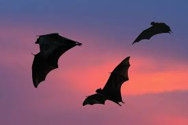
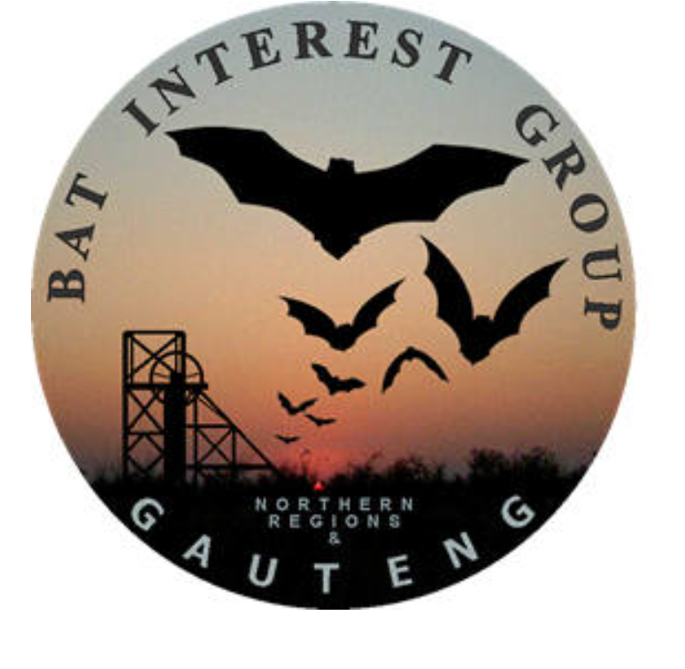

What are bats?

Bats are flying mammals that belong to the order Chiroptera. They are the only mammals capable of sustained flight and are found in almost every part of the world.
Why are bats important?
Bats play a crucial role in ecosystems as pollinators, seed dispersers, and insect controllers. They help maintain healthy ecosystems and contribute to biodiversity.
Threats to Bats

Bats face various threats, including habitat loss, climate change, disease (such as White-nose Syndrome), and human disturbance. Conservation efforts are essential to protect these important creatures and their habitats.
What to do if you find a grounded or injured bat
If you find a grounded or injured bat, do not handle it with bare hands. Use gloves or a towel to place it in a secure, ventilated cardboard box, and contact a local wildlife rehabilitator or bat interest group immediately
Bat Conservation and Safety
For more information about bat conservation and safety, visit the Bats Gauteng website.

How to help with bat conservation
You can help with bat conservation by creating bat-friendly habitats, avoiding the use of pesticides, and supporting local conservation efforts. Educating others about the importance of bats can also make a significant impact.
Bat Conservation Efforts
header
There are many organizations dedicated to bat conservation, such as Bat Conservation International and the Bat Conservation Trust. These organizations work to protect bats and their habitats through research, education, and advocacy.
header
There are many organizations dedicated to bat conservation, such as Bat Conservation International and the Bat Conservation Trust. These organizations work to protect bats and their habitats through research, education, and advocacy.
header
There are many organizations dedicated to bat conservation, such as Bat Conservation International and the Bat Conservation Trust. These organizations work to protect bats and their habitats through research, education, and advocacy.